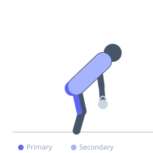
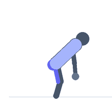

Exercise guide / Kettlebell Swing
Kettlebell Swing
The kettlebell swing is a ballistic hip-hinge exercise in which the kettlebell is swung from between the knees to chest height (Russian) or overhead (American) using explosive hip extension. Despite the apparent arm movement, the swing is fundamentally a posterior chain exercise — the glutes and hamstrings generate the force that propels the kettlebell, while the arms merely guide it. It develops explosive hip power, posterior chain endurance, and cardiovascular conditioning simultaneously.
Primary muscles
gluteus maximus
biceps femoris long head
semitendinosus
semimembranosus
Secondary muscles
iliocostalis
longissimus
rectus abdominis
trapezius upper
Stabilizers
transverse abdominis
internal oblique
Equipment
Kettlebell


Starting position
- Stand with feet slightly wider than shoulder-width with the kettlebell on the floor just in front. Hinge at the hip to grip the kettlebell with both hands, tilting it toward you.
Setup
- Choose a kettlebell weight that allows explosive hip drive without compromising lumbar position. Beginners: 12–16 kg. Intermediate: 20–28 kg. The first swing begins from a hip hinge, not a squat.
Steps
- Step 1: Hike the kettlebell back between the legs like a hike pass in American football — hinging at the hip, loading the hamstrings.
- Step 2: Explosively extend the hips forward — the glutes contract hard and the hips snap to full extension.
- Step 3: The momentum of the hip drive propels the kettlebell forward and upward. The arms guide, not lift.
- Step 4: At the top (chest height for Russian swing), the core is braced hard and the body is a straight line.
- Step 5: Allow the kettlebell to arc back down, hinge at the hip again, guide the bell between the legs, and repeat.
Coaching cues
- Hike it back like a football hike
- Hips, not arms — the bell floats because of your hip drive
- Stand tall at the top — plank position, not arched
Breathing
- Exhale sharply as the hips snap forward. Inhale as the bell swings back. The breathing pattern reinforces core bracing at the apex.
Range of motion
- Full hip hinge at the bottom (hamstrings loaded) to full hip extension at the top (glutes fully contracted, body upright).
Tempo
- Ballistic — the swing is not tempo-controlled but should be fluid and controlled, not frantic
Common mistakes
- Squatting during the downswing instead of hinging — the knees should stay relatively extended as the hips hinge back
- Using the arms to lift the bell — the arms should hang loose; the hip drive does the work
- Hyperextending the lower back at the top — the top position should be tall and plank-like, not arched
Safety
- Learn the hip hinge pattern with a Romanian deadlift before attempting swings under load
- Ensure adequate ceiling height (minimum 3 m) for overhead swings
- Do not swing near other people — a released bell is a serious hazard
Training
- strength: 5–10 reps
- hypertrophy: 10–20 reps
- endurance: 20–50 reps
- strength: 3–5 sets
- hypertrophy: 3–5 sets
- endurance: 3–6 sets
- Rest: {'strength': 120, 'hypertrophy': 60, 'endurance': 30}